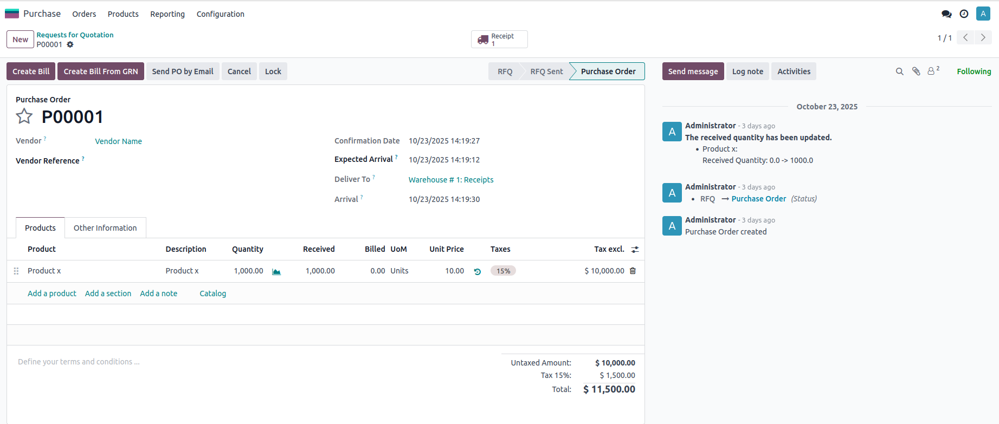
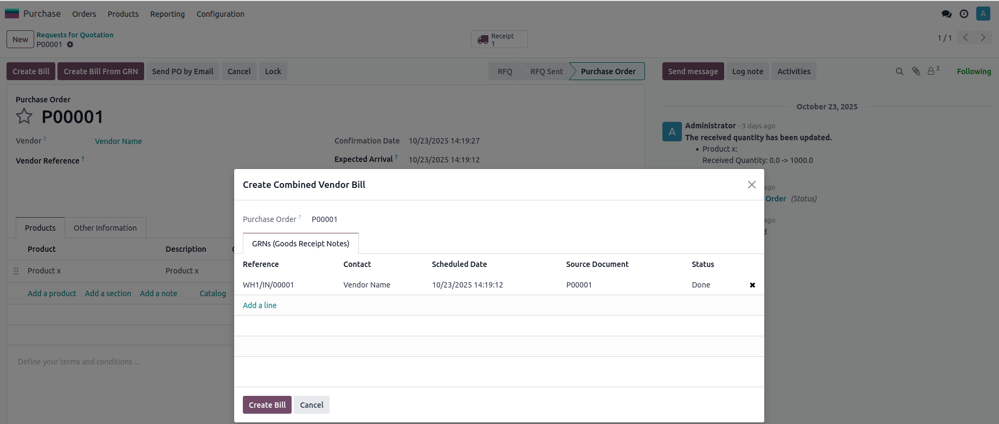
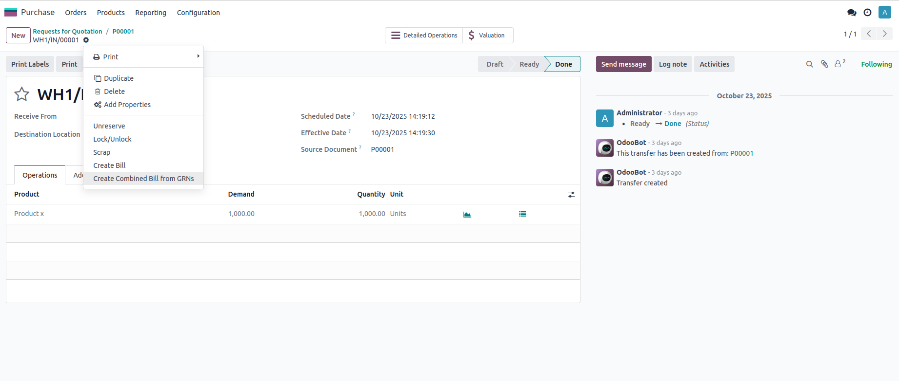
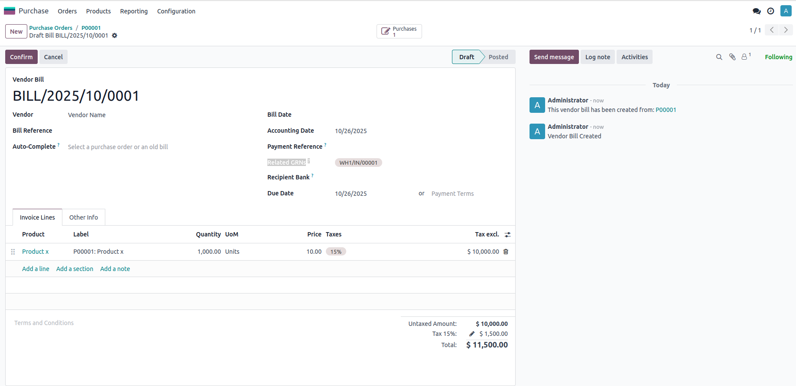
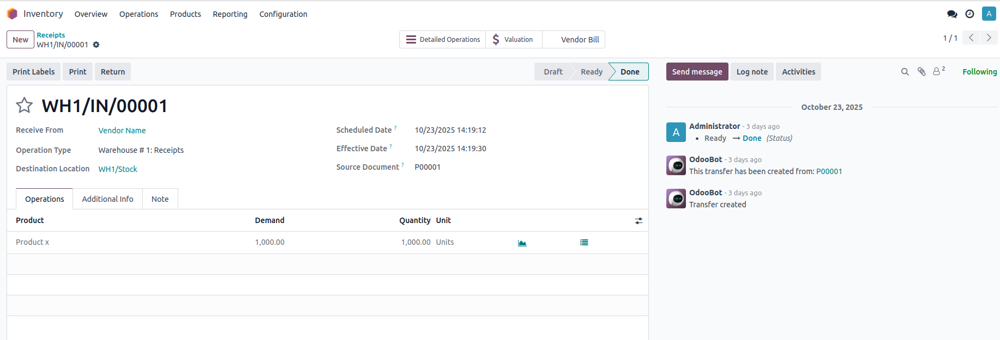
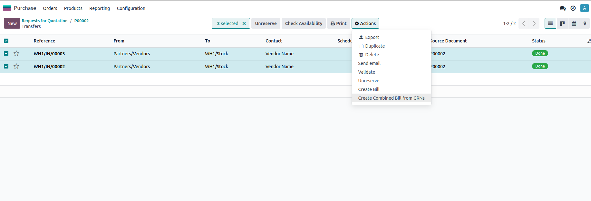
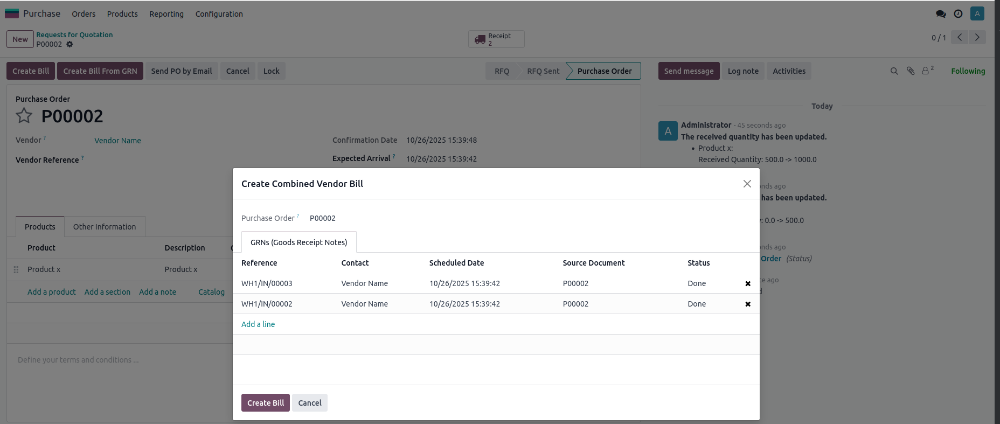

This module streamlines the vendor billing process by enabling direct bill creation from Goods Receipt Notes (GRNs). Say goodbye to manual bill entry and ensure accurate billing based on actual received quantities!
Create Vendor Bills in Two Flexible Ways:
Key Features:
Benefits:
Navigate to Purchase → Purchase Orders → Select your order
Click the "Create Bill from GRN" button to open the wizard

Select one or multiple GRNs (receipts) associated with the purchase order
The system will automatically create a bill with the received quantities

Navigate to Inventory → Operations → Receipts (or Transfers)
Open a validated receipt and click the "Create Bill" button

The bill is automatically created and linked to the GRN after click on create button
All received quantities and prices are populated automatically

View linked GRNs directly from the vendor bill
Complete traceability from purchase order → receipt → bill
From any receipt, you can easily view all bills created from that GRN
Perfect for tracking partial billing scenarios

Combine multiple receipts into a single consolidated vendor bill
Ideal for suppliers with multiple partial deliveries


Email: modsaid999@gmail.com
We offer customization services to tailor this module to your specific business needs.
Save Time
Reduce manual entry
Improve Accuracy
Bill actual received quantities
Complete Traceability
Full audit trail
User Friendly
Intuitive interface